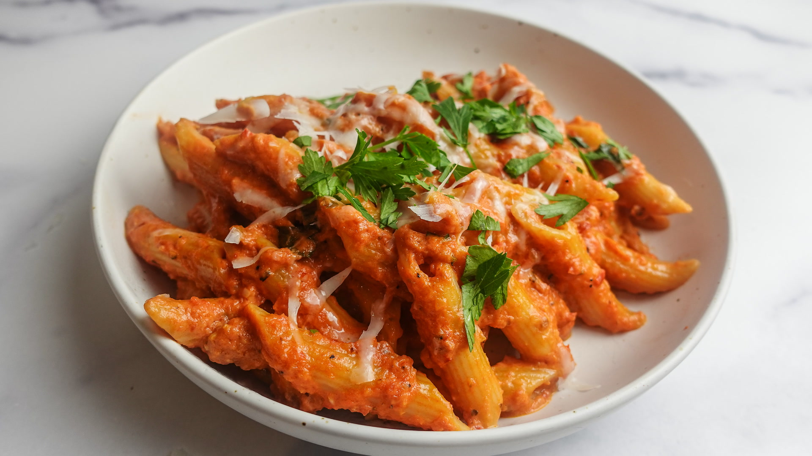

Penne Alla Vodka

Description
Today we learn how to make penne vodka aka penne alla vodka, aka penne with vodka sauce. Penne alla vodka is one of the most delicious pasta even and it reminds me of childhood. I set out to recreate that ideal version of penne vodka that I remember as a child.
Ingredients
- 1 LB Penne
- 1/4 LB Prosciutto (optional)
- 4 Gloves Garlic, Sliced Thin
- 3/4 Cup Cream
- 3-4 Tablespoons, Vodka
- 1 Can Whole Peeled Tomatoes
- 1 Teaspoon Red Pepper Flakes
- 1 Stem of Basil
- 1/4 Cup Parsley, finely diced for garnish
- 1/2 Cup Parm for garnish
- 2-3 Tablespoons, Olive Oil
- 2 Tablespoons, Unsalted Butter
- Salt & Pepper
Steps
- In go the tomato paste and red pepper flakes. Cook, stirring often with a wooden spoon, until the paste coats the alliums and is starting to darken.
- Now stir in the vodka, scraping up any browned bits, and remove the pot from the heat; we'll get back to it in a minute!
- Time to boil some pasta. Use a large pot and be sure to salt the water generously.
- When the pasta is al dente (meaning it's still just a wee bit firm at the core), scoop out 2 cups of the pasta water and then drain the pasta.
- Okay, back to the sauce. Bring the sauce to a simmer over medium heat and stir in 1/4 c. pasta water and the cream.
- Sprinkle half of the Parmesan over and stir until melted and combined. Now turn off the heat and stir in the drained pasta and remaining Parmesan.
- If the pasta is looking a little dry, stir in more pasta water, a tablespoon at a time. Taste and season with salt if needed.